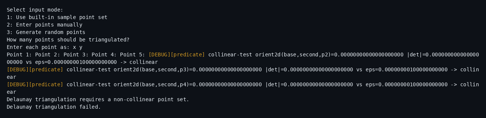
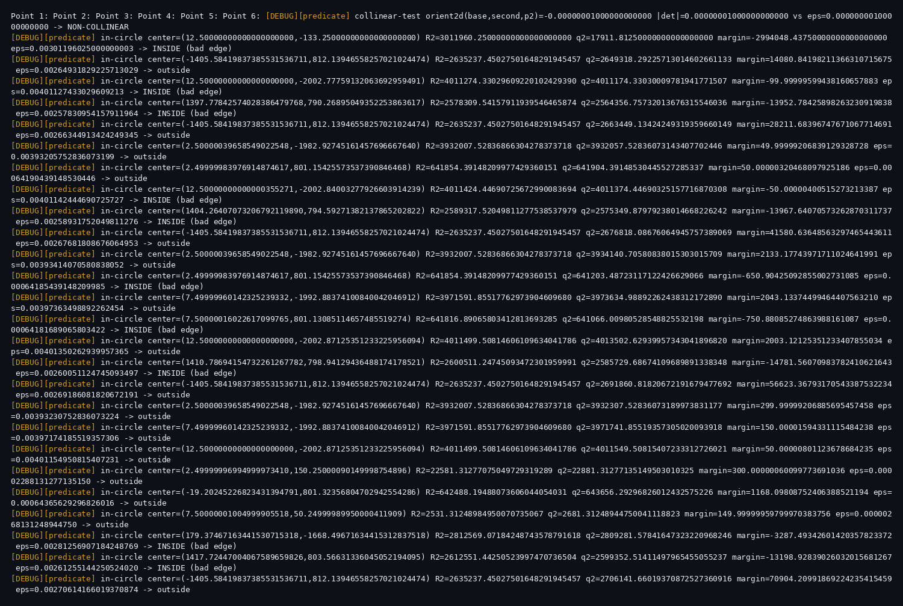
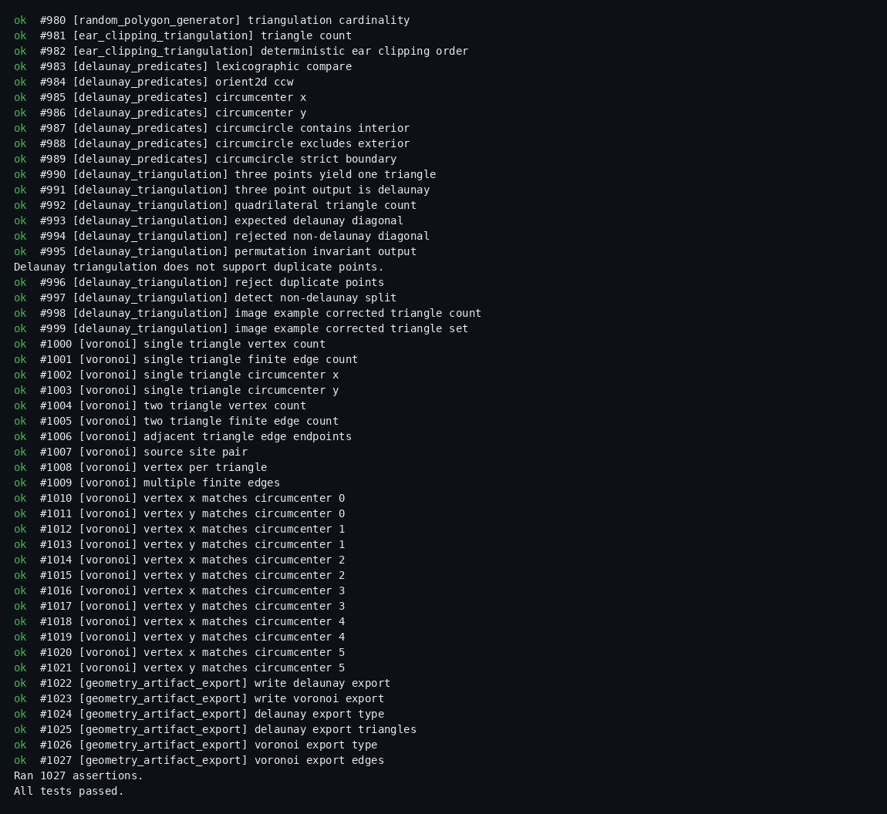
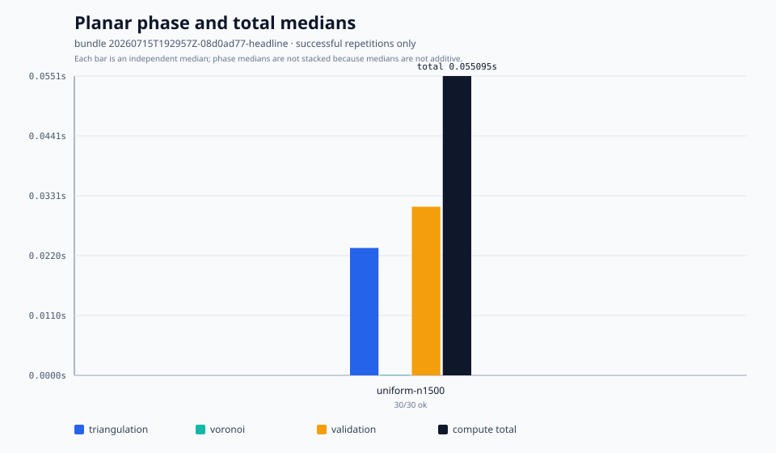
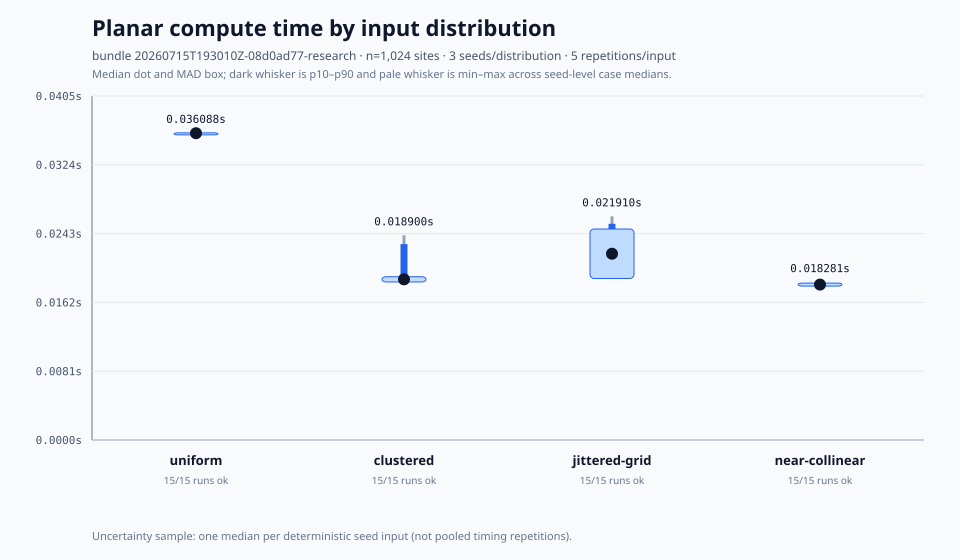
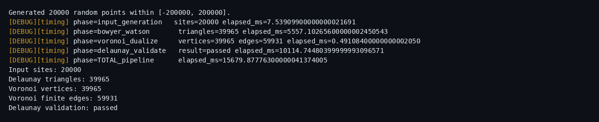

Geometry engine
Cutting complicated shapes into triangles, and turning scattered points into the meshes and regions games and mapping software rely on.
By the last checkpoint before agent-authored C++ entered the tree, I had independently built a working standard-library C++ geometry library from a bare Bash terminal using Vim and Make: 2,383 tracked C++ lines across 33 source and header files, covering points, lines, triangles, polygons, collision and containment, an original ear-clipping triangulator, random polygon generation, CLI drivers, and early visualization support. I later directed and reviewed coding-agent work that substantially revised the ear clipper and implemented the current Bowyer–Watson Delaunay and Voronoi layers, the custom TDD harness and much of its suite coverage, browser viewers, benchmarks, and terrain applications.
01Triangulation
The nominal algorithms are straightforward; the boundary cases are not. The predicate implementations explicitly handle collinear inputs, duplicate points, and orientation with scale-aware epsilon checks. In the tested near-degenerate cases, a near-touch resolves without a crossing or degenerate mesh.


The same predicates, caught deciding. With debug tracing on, every verdict prints its evidence: the determinant, the epsilon it was weighed against (size-scaled for the in-circle tests), and the call.
{kind=link}

{kind=link}

{kind=link}

02Delaunay & Voronoi
One run through the engine at a legible scale: 70 sites, seed 7. The raw input, its Delaunay triangulation, the Voronoi dual, and the two overlaid. Every Voronoi vertex is the circumcenter of a triangle — often outside its own triangle, since only acute triangles contain their circumcenters.


03Measured performance
The published benchmark studio keeps exact generated inputs, raw process output, per-run resource logs, manifests, checksums, and validation results. The compute metric covers triangulation, finite Voronoi construction, and topology validation; it excludes input generation, startup, and serialization.
{kind=link}

{kind=link}

{kind=link}

Full detail — build, algorithms, tests — in the README: github.com/harrisonwolf/planar-geometry-engine